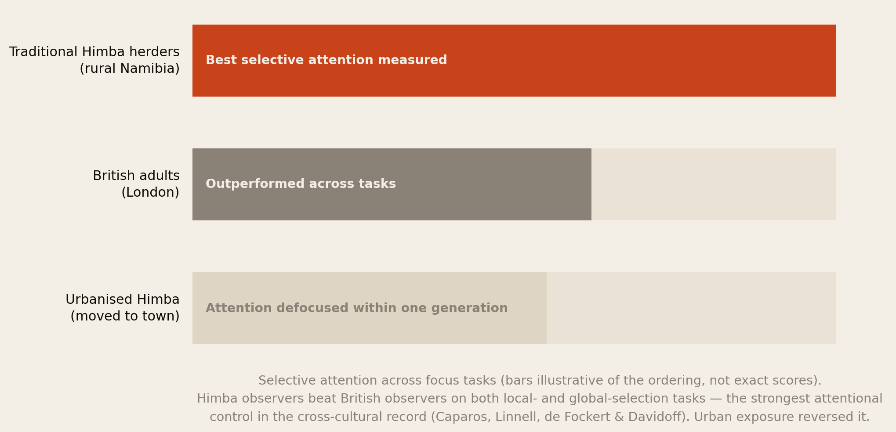
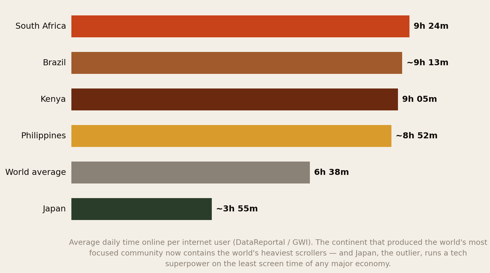
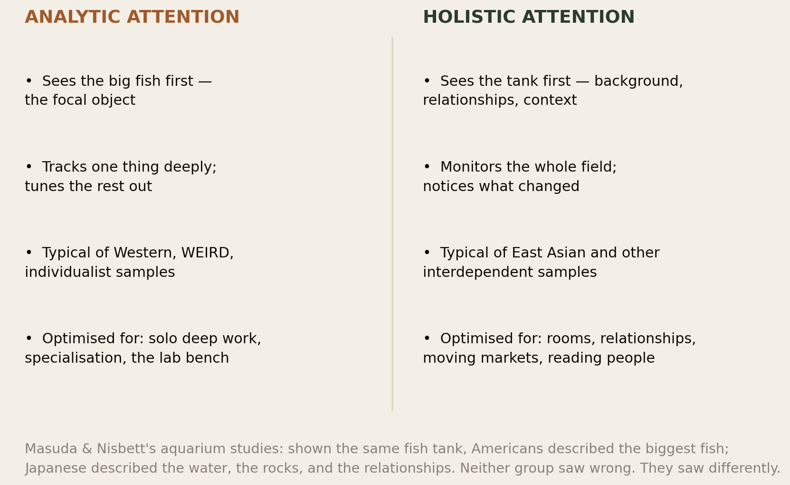
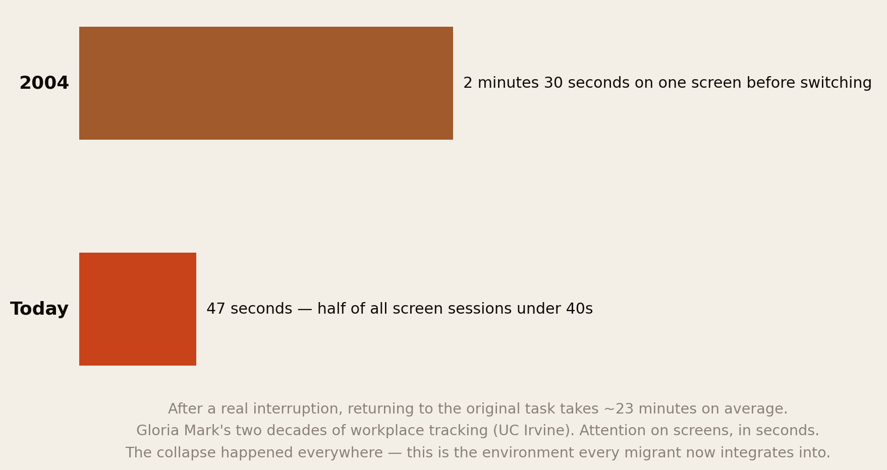
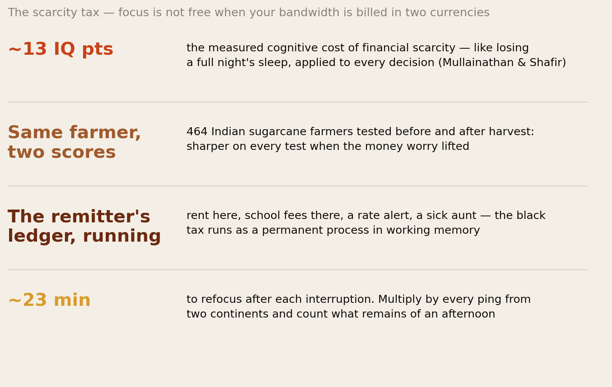
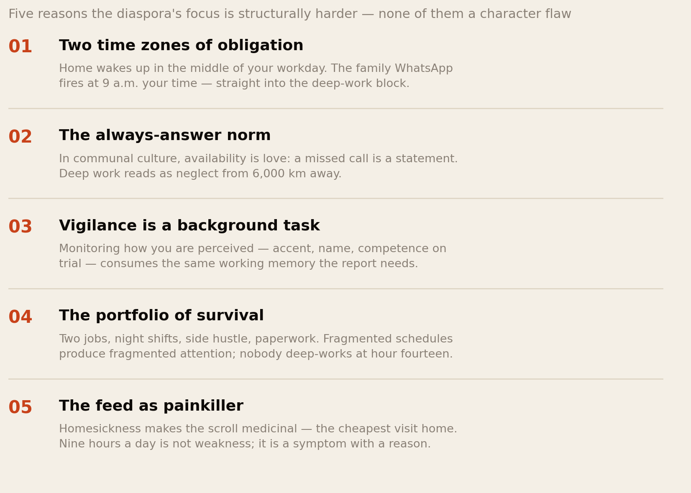
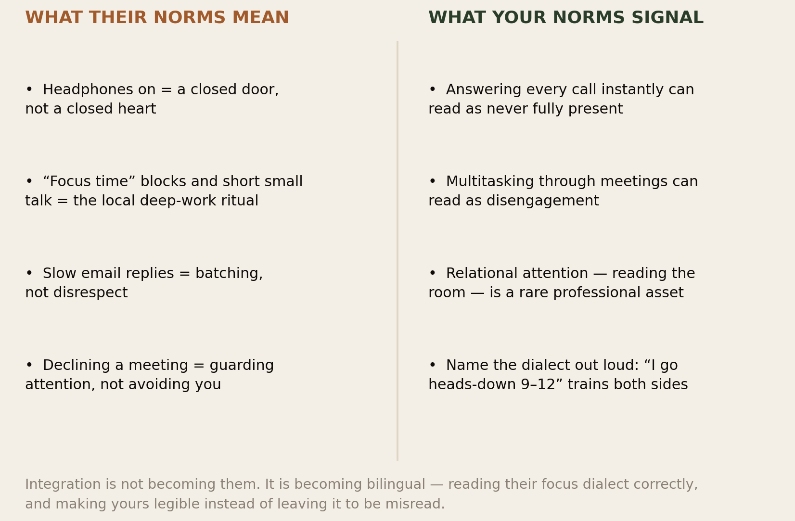
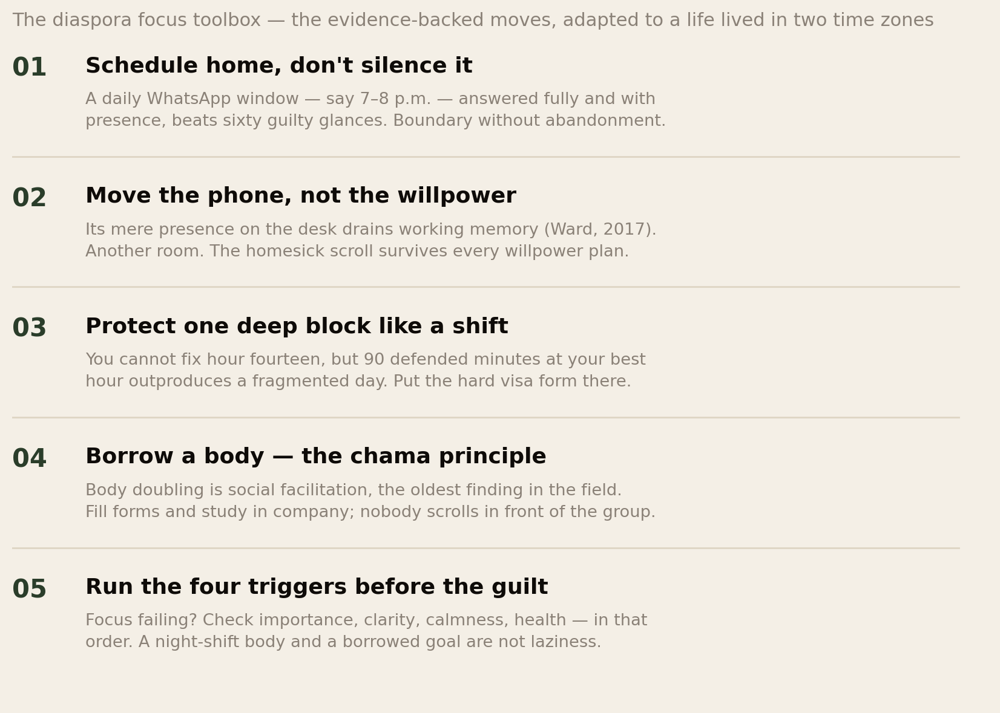

The Focus Dialect.
The best selective attention ever measured in a laboratory belongs to Himba herders in northern Namibia — and South Africa and Kenya now top the entire world in daily screen time. Both facts are African, both are true, and together they demolish every lazy story about who can and cannot concentrate. This report is about what focus actually is, how cultures attend differently, why the diaspora’s attention is structurally harder than anyone admits — and how reading a host culture’s focus norms correctly is one of the fastest integration skills you can learn.
Section 01The Short Version
A member of this network described her week in one sentence: at work in Frankfurt she is told she seems “scattered” in deep-work culture, and on Sunday her mother tells her she has become “too busy to pick up a phone”. Failing two attention cultures at once, in one head. This report is about that machine — and how to run it on purpose.
- The world’s best measured focus is African. In a decade of cross-cultural attention studies, traditional Himba herders in Namibia outperformed British adults on selective-attention tasks across the board — the strongest attentional control on record. And the same research found the kill switch: Himba who moved to town lost the edge; even a visit to an urban environment measurably defocused attention. Focus is not a trait cultures have. It is a state environments produce.
- The distraction environment has now reached Africa at full strength. South Africans spend 9 hours 24 minutes a day online — the most in the world; Kenya sits near the top at 9 hours 5 minutes; the world average is 6:38. The continent leapfrogged the desktop era straight into the most attention-hostile technology ever built, on the device that never leaves the hand.
- Focus is also a dialect. Cross-cultural psychology’s most replicated perception finding: Western samples attend analytically (lock onto the focal object, tune out context) while interdependent cultures attend holistically (monitor the whole field and its relationships). Neither is deficit. But migration means being graded in an attention dialect you did not grow up speaking — the third dialect this library has mapped, after time and confidence.
- The diaspora’s focus is structurally harder, not weaker. Two time zones of obligation, the always-answer norm of communal culture, the vigilance of being on trial, the two-job schedule, and the scarcity tax — financial pressure alone consumes roughly 13 IQ points of bandwidth. Your attention is not broken. It is billed in two currencies.
- Knowing the difference is an integration skill. The colleague’s headphones are a closed door, not a closed heart; your instant availability can read as absence of seriousness. Learning to read the host culture’s focus rituals — and to make your own legible — converts daily friction into fluency faster than almost anything else you can practise.
Your grandmother could follow one goat across a hillside of goats. The capacity is your inheritance. The environment is the fight.
Section 02The Most Focused People on Record

Start with the finding that should reorder every conversation about Africans and concentration. Over a decade of fieldwork in northern Namibia, a Goldsmiths (University of London) team led by Jules Davidoff and Serge Caparos ran the standard laboratory attention batteries on Himba pastoralists — and on matched British adults. The result, replicated across tasks: the Himba showed better selective attention than the Londoners, on both local-focus and global-focus tests. They locked onto targets harder, ignored distractors better, and switched attentional scope more deliberately. In the published literature on cross-cultural attention, nobody has out-focused a traditional Himba herder.
Then the same team found the mechanism, and it is the whole report in miniature. Himba who had relocated to the regional town of Opuwo — same people, same upbringing, different environment — showed defocused attention; even traditional Himba who had merely visited town shifted measurably. The researchers’ conclusion: urban environments “decrease attentional engagement” — cities and their stimulation push the mind toward constant exploration at the expense of engagement and control.
Sit with what this means for our community. The deepest measured focus on earth was produced by an African life: herding demands hours of sustained, selective, consequence-bearing attention — one animal tracked across a moving herd, one snake-shaped shadow monitored in the grass. The capacity is not Western, not East Asian, not a gift of industrial schooling. It is, on the best evidence available, most purely African. What varies is the environment the capacity is deployed in — and that is the variable the rest of this report follows across continents, because it is the variable that follows you through the airport.
Section 03The Foraging Brain
What is distraction, mechanically? The research frame the Focus Toolkit opens with — and the one that best fits the herding story above — is foraging. A bee drains a flower and moves on; a brain exploits an information source until the estimated reward drops, then explores for a better one. Scientists call it the explore–exploit dilemma, and every phone-check mid-task is that ancient algorithm running exactly as built. Distraction is not a character flaw. It is Stone Age foraging hardware — the same hardware that kept a herder scanning between goat and horizon — dropped into an environment precision-engineered to exploit it: infinite scroll removed the stopping points, variable rewards made every notification a maybe, and algorithms learned precisely how long to keep you at each flower.
Three consequences matter for everything that follows. First, willpower is the wrong tool — you cannot out-discipline a slot machine designed by ten thousand engineers; the winners design their environment instead. Second, the brain follows perceived importance: when a task does not feel like it matters, exploration mode is the rational default — which is why Section 11’s diagnosis beats any app. And third, whoever controls the environment controls the focus — which is why the Himba result reverses in town, and why the next section is the most quietly alarming chart in this library.
Section 04The Feed Reaches the Continent

Here is where the Himba mechanism scales to a continent. In the global digital-use surveys, South Africa leads the entire world in daily time online — 9 hours 24 minutes per internet user, with Kenya close behind at about 9 hours 5 minutes, alongside Brazil and the Philippines; Nigeria’s connected population also ranks far above the 6:38 world average. The same continent that produced the most focused community ever measured now contains the heaviest scrollers on earth. There is no contradiction. There is only Section 02’s finding, repeated at national scale: change the environment, and the attention follows.
Why did Africa arrive at the top? Partly measurement (the surveys count connected users, who skew young and urban), but mostly structure. Africa leapfrogged the desktop era: the first internet most of the continent ever touched was the phone — the most intimate, most interruptive, most algorithmically optimised attention machine ever built. There was no decade of dial-up to build habits on, no landline culture, often no legacy TV schedule; the feed arrived as the medium, fused with the wallet (mobile money), the market (WhatsApp commerce), the church group and the family. For the diaspora this history travels: the phone is not a gadget you can casually put down, because it is simultaneously your bank branch, your obligation ledger, and the only door to everyone you love. That is what makes the next sections harder for us — and what makes the fixes in Section 10 need translation, not import.
Section 05Focus Is a Dialect

Now the second axis, because focus does not just vary in amount — it varies in shape. In cross-cultural psychology’s most famous perception experiments, Takahiko Masuda and Richard Nisbett showed Americans and Japanese the same animated aquarium. Americans described the biggest, fastest fish. Japanese described the water, the rocks, the relationships — and referred to context roughly twice as often. A generation of follow-ups mapped the split: analytic attention (object-first, context-suppressing, typical of Western individualist samples) versus holistic attention (field-first, relationship-tracking, typical of interdependent cultures). The difference shows up in eye movements, memory, even what counts as “the point” of a scene.
Where does Africa sit? Honestly: under-studied — the entire literature is a rebuke to psychology’s WEIRD sampling problem, and the Himba work exists precisely because one team bothered. But the structural argument is straightforward: African social life is profoundly interdependent — the compound, the extended family, the market, the communal audit — and it trains exactly what holistic attention is: continuous monitoring of people, relationships and context, because in a communal economy the context is the survival information. The aunties who track every guest’s plate at a wedding; the trader reading a whole market’s mood; the child raised to notice who has not eaten — this is not distractibility. It is a different professional-grade attention, pointed at a different target. The tragedy is only that nobody at your performance review knows the dialect exists.
Analytic cultures focus on the fish. Holistic cultures focus on the water. Migration is being a water-reader in a fish-grading economy — while holding the world’s heaviest phone.
Section 06The Outliers

The requested outliers, briefly and honestly:
- The West is the strangest case: it invented both the deep-work cult and the distraction economy. Gloria Mark’s UC Irvine team has tracked knowledge workers since 2004: attention on a single screen fell from 2½ minutes to 47 seconds, half of all screen sessions now under 40 seconds, and a genuine interruption costs ~23 minutes of refocusing. The same culture then built a booming market of focus apps, dopamine-detox retreats and $30 co-working subscriptions to buy back what its platforms took. When you integrate into a Western workplace, understand: they are not natives of focus. They are refugees from their own environment — which is why their rituals (headphone rules, meeting-free Wednesdays, “focus time” calendars) are so formal. Rituals are what cultures build where instinct failed.
- Japan is the quiet outlier. A technological superpower whose internet users report roughly 4 hours a day online — the lowest of any major economy, and whose craft culture (shokunin, monotasking, the tea ceremony’s single-pointedness) treats sustained attention as a moral practice. East Asia’s holistic attention, note, did not stop deep focus — it shaped what the focus is for.
- And the strongest outlier of all is in Section 02 — a Namibian community out-focusing the industrialised world, until the industrialised environment arrived. Put the three together and the lesson is clean: no culture owns concentration. Environments rent it out.
Section 07The Scarcity Tax

Before this report can talk honestly about the diaspora’s focus, it has to price the invisible load. Sendhil Mullainathan and Eldar Shafir’s scarcity research made one of the most important measurements in modern psychology: financial worry consumes cognitive bandwidth — roughly 13 IQ points’ worth, comparable to losing a full night’s sleep. In the elegant field version, 464 Indian sugarcane farmers were tested before and after their annual harvest payout: the same farmer scored significantly sharper once the money worry lifted. Poverty does not make people less intelligent. It runs an unkillable background process in working memory — and attention is what the process eats.
Now apply it to the remitting migrant, because our community runs a version no study has yet measured. The black tax is not only a financial ledger — it is a cognitive subscription: rent here and school fees there, the exchange rate watched like weather, the sick aunt’s test results pending, the cousin’s fees due Friday. Each is a small open loop, and open loops are precisely what working memory cannot put down. Add the vigilance of being on trial in the host country — the monitoring of how your accent, name and competence are landing, which stereotype-threat research shows consumes the same executive bandwidth — and the conclusion writes itself: the diaspora professional who feels scattered is not weaker than their colleague. They are running more programs on the same hardware. Diagnosis first, tools second: that ordering is the whole point of this report.
Section 08The Interrupted Life Abroad

Here is why this subject matters specifically for Africans in a demanding foreign culture, spelled out as machinery. Two time zones of obligation: home wakes up in the middle of your workday, so the family WhatsApp detonates at 9 a.m. Frankfurt time, precisely inside the deep-work block your job is grading you on — and each glance is a ~23-minute tax. The always-answer norm: in communal culture, availability is love; a phone that rings unanswered is a statement, and “I saw your call, I was working” translates badly across 6,000 km. You are, quite literally, caught between a culture that measures love in responsiveness and a culture that measures competence in unresponsiveness. Vigilance: the self-monitoring of the only African in the room is a background task with a bandwidth bill. The portfolio of survival: two jobs, night shifts and paperwork produce fragmented schedules, and fragmented schedules produce fragmented attention — nobody deep-works at hour fourteen. And the feed as painkiller: homesickness makes the scroll medicinal — nine hours a day is the cheapest available visit home, which is why shame-based app-deleting fails; the mood-repair loop runs on feelings, and the feeling here is longing.
The colleague who out-focuses you is not out-disciplining you. They are playing the same game with one time zone, one job, one audience and no ledger.
Section 09The Integration Decoder

This is the section the whole report exists to deliver: how knowing the focus difference speeds up integration. Culture clash around attention is almost never read as culture clash — it is read as character. Decode it in both directions:
- Read their rituals as rituals, not rejection. The headphones, the blocked calendar, the two-line email, the colleague who does not chat before 11 — in deep-work cultures these are focus liturgy, the formal rules a distraction-saturated society built because instinct failed (Section 06). The warmth you are missing is not absent; it is scheduled. Taking the closed door personally is the integration error our identity research hears most often — and it costs relationships that were never actually cold.
- Know what your norms broadcast. Answering every call instantly, monitoring the group chat in meetings, treating availability as politeness — in your dialect this is respect; in theirs it can read as never fully here. The fix is not abandoning your values. It is naming the dialect out loud: “I go heads-down 9 to 12; after that I’m all yours” converts what they misread as flakiness into what they respect as discipline — one sentence, enormous return.
- Deploy the holistic advantage deliberately. Your field-first attention — reading rooms, tracking relationships, noticing the client’s hesitation everyone else missed — is rare and valuable in analytic workplaces. Volunteer for the stakeholder-heavy, people-dense work where it wins; do not let a culture that only grades fish-tracking convince you water-reading is nothing.
- And run the exchange home too. Explain the host dialect to your family — not as a wall but as a window: “my deep hours are your night; my 7 p.m. is fully yours.” Most families accept a reliable window with gratitude. What breaks trust is not boundaries; it is unexplained silence.
Section 10The Diaspora Focus Toolbox

The focus literature’s toolbox — the Focus Toolkit collects it well — is unanimous that systems beat willpower: design the environment once instead of fighting it hourly. The diaspora translation:
- Schedule home; don’t silence it. The imported advice says “turn off notifications”; for us that reads as amputation. The translation is a daily home window — a reliable hour, answered with full presence — which honours the always-answer value and protects the deep block. Boundary without abandonment.
- Move the phone, not the willpower. Ward’s “brain drain” studies: the phone’s mere presence on the desk — silent, face-down — measurably drains working memory. Another room. This one intervention survives homesickness, because it removes the cue instead of debating it.
- Protect one block like a shift. You cannot fix hour fourteen of a double, but 90 defended minutes at your best hour outproduce a fragmented day — and that is where the citizenship form, the conversion exam, the business plan goes. Energy is the substrate: 17–19 hours awake impairs you like alcohol; even mild dehydration measurably cuts attention. The night-shift worker’s focus problem is physiology, not character.
- Borrow a body. Body doubling — working in another person’s committed presence — rides social facilitation, one of psychology’s oldest findings, and it is the chama principle again: nobody scrolls in front of the group. Study calls, form-filling sessions, the library pact. The most communal culture on earth should own this tool, not rent it from a co-working app.
- Start stupidly small. Two minutes on the avoided task. Task initiation, not completion, is where focus dies — and momentum does the rest.
Section 11The Four Triggers, Diaspora Edition
The toolkit’s best diagnostic deserves its own section: when focus fails, it fails for one of four reasons — importance, clarity, calmness, or health — and forcing effort through the symptom is painkillers for a broken leg. The diaspora translation of each:
- Importance: is the task actually yours? Half the diaspora’s to-do list is borrowed — the second degree the family expects, the exam that impresses an audience 6,000 km away. A brain refusing to focus on a goal you never chose is not malfunctioning; it is voting.
- Clarity: is the next step actually known? “Sort my papers” is fog; “find my reference number” is a step. Migration bureaucracy manufactures fog at industrial scale — treat vagueness, not laziness, as the enemy.
- Calmness: a nervous system running precarity, audience pressure and visa anxiety is over-aroused, and an over-aroused brain attends to every threat at once — which is functionally focusing on nothing. Regulate first, work second.
- Health: shift-slept, dehydrated, running on chips-funga at hour twelve — no system compensates. Sometimes the productivity answer is water, food and one honest night of sleep.
Run the four before the guilt, every time. The answer is usually one of them — and almost never “you are lazy”.
Section 12The African Advantage
Assemble the pieces and the reframe writes itself. The deepest measured focus on record is African (Section 02). The attention dialect our cultures train — holistic, relational, field-first — is professional gold in every job that involves human beings (Section 05). The communal structures our cultures built are, once again, the top-ranked intervention in the literature: body doubling is the harambee of attention, and the study group, the chama meeting, the church committee are focus technologies with centuries of field testing (Section 10). And the discipline of the market stall — open every dawn, one transaction at a time, fully present to each customer — is monotasking of a purity the productivity industry sells courses about.
What Africa and its diaspora face is not a focus deficit. It is a focus heist: the world’s most attention-hostile environment, delivered through the world’s most indispensable device, to the populations with the heaviest cognitive load and the youngest median age — plus, abroad, a grading system that only recognises one dialect. Name it that way and the strategy stops being self-improvement and becomes what it always was for us: defence of a resource. Your attention is the last asset that arrived with you fully intact through customs. Guard it like the remittance it funds.
Section 13The Uncomfortable Part
First: the always-available norm has costs we bill to each other, not to “culture”. The same community that respects no closed doors also interrupts its own students before exams, its own founders before launches, its own night-shift workers at noon. If availability is love, then guarding each other’s focus blocks is love too — the community that texts “call me when you surface” instead of triple-calling is richer, in degrees and businesses, than the one that measures loyalty in ringtones. We audited our own Saturdays in the procrastination report; the same audit applies to each other’s Tuesdays.
Second: nine hours is still nine hours. Everything in Section 08 is true — the scroll is medicinal, the phone is the bank and the family and the door home. And: the medicine has a dosage problem, the feed’s owners are not neutral pharmacists, and the hours are real hours out of finite lives. Compassion for why we scroll cannot become a permission slip. The honest question is the one this library keeps asking about money, and it works for attention identically: who is the audience for this hour, and what do they contribute to your actual life?
Third: do not integrate all the way into the burnout. The deep-work culture you are learning to read also produced the 47-second attention span, the epidemic loneliness and the highest-anxiety workplaces on record — it is a culture coping, not a culture arrived. Learn its dialect fluently, use its rituals gladly, and keep the thing it is trying to buy back: the presence, the long conversation, the meal without screens, the ability to sit with an elder for an afternoon that our cultures never lost. Integration done right is bilingual, not converted — in focus as in time, as in confidence, as in everything this series has mapped.
Section 14Method & Limits
This report combines cross-cultural attention research, workplace attention tracking, digital-use data and cognitive economics, as at 2 September 2026.
- The Himba findings come from a programme of peer-reviewed studies (Caparos, Linnell, de Fockert, Davidoff and colleagues) using standard laboratory tasks with necessarily modest field samples. “Best selective attention measured” means best in the published cross-cultural comparisons we could find, not a settled world championship; Fig 1’s bars illustrate the replicated ordering, not exact scores. The urbanization effect is the programme’s own within-culture comparison and among its most striking results.
- Screen-time figures are from DataReportal/GWI-based surveys of internet users, who skew young and urban — especially in countries with lower connectivity, which inflates African national figures relative to whole populations. The ranking (South Africa first, Kenya near the top, world average ~6:38, Japan lowest among major economies) is stable across recent waves; exact minutes move by wave and are marked approximate where we were not certain.
- The 2½-minutes-to-47-seconds decline and the ~23-minute interruption cost are Gloria Mark’s longitudinal workplace research; they describe observed knowledge workers, overwhelmingly in the US.
- The analytic/holistic literature (Masuda & Nisbett and successors) is one of cross-cultural psychology’s most replicated programmes, but Africa is badly under-sampled in it; our placement of African attention on the holistic-relational side is a structural argument from interdependence, supported by the ethnographic record, and labelled as argument. Sections 05, 08, 09 and 12 are interpretive syntheses in the same sense.
- The scarcity findings (13 IQ points; sugarcane farmers) are from Mullainathan & Shafir’s programme; effect sizes in this literature have been debated in replications, though the core bandwidth mechanism is well supported. The “remitter’s bandwidth tax” is our extension — no study has measured scarcity load in remitting migrants specifically. That absence is itself a finding.
- The toolbox evidence — smartphone presence draining working memory (Ward et al., 2017), sleep-deprivation impairment comparable to alcohol (Williamson & Feyer, 2000), dehydration and attention, social facilitation (Zajonc, 1965), the four-trigger diagnostic — is cited in the primary literature; individual results vary in strength and all are levers, not switches.
- The framework reached us partly through a secondary source — Mark Manson’s Focus Toolkit, shared by a member of this network. We went to the primary papers it references — Pirolli & Card on information foraging, Ward, Duckworth, Deci & Ryan, Zajonc, Kurzban’s opportunity-cost model — and cite those; the toolkit is credited as the pointer, not as evidence.
- Nothing here is clinical advice. Focus problems that persist across every environment — especially lifelong ones — can be ADHD, which is real, treatable, and heavily under-diagnosed in African communities. A stuck year deserves an assessment, not another system.
Principal sources: Caparos, Linnell, Bremner, de Fockert & Davidoff (2013) and the wider Himba research programme, including the urbanization studies; Masuda & Nisbett (2001) on holistic versus analytic attention; DataReportal / GWI digital-use surveys; Gloria Mark’s attention-span research (UC Irvine); Mullainathan & Shafir on scarcity and bandwidth; Ward, Duke, Gneezy & Bos (2017) on smartphone brain drain; Pirolli & Card (1999) on information foraging; Zajonc (1965) on social facilitation; Deci & Ryan on self-determination; Kurzban et al. (2013) on the opportunity-cost model of attention; Williamson & Feyer (2000) on sleep deprivation. Located partly via Mark Manson’s Focus Toolkit.
Companion reports: The Sense of Time, The Cost of Later, The Envy Economy, The Most Optimistic People on Earth and The Black Tax Ledger.
The diaspora helps the diaspora.
Africa Global Forum is a peer network for Africans abroad — help each other, sit together, and bounce ideas. This research is part of an open library, free to read and share.